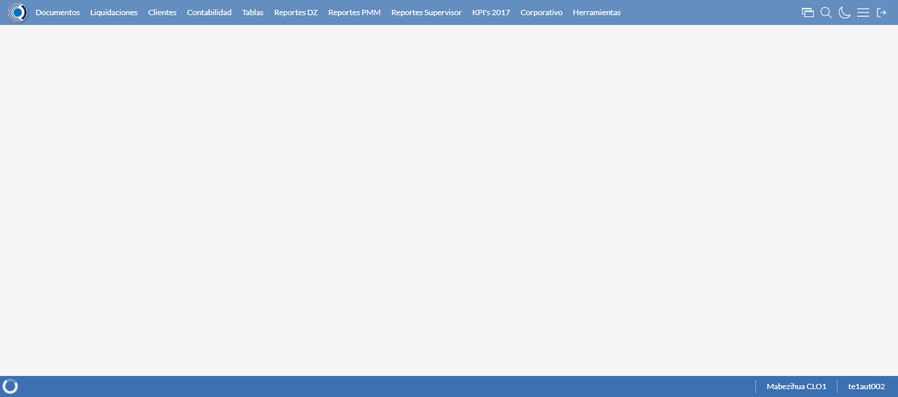
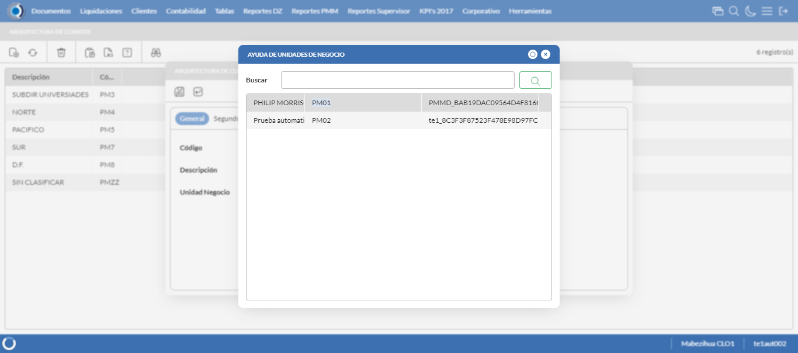
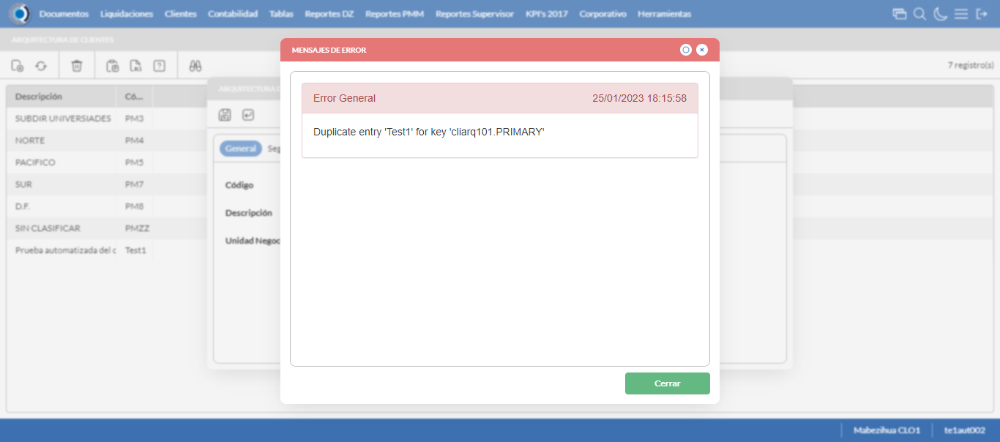
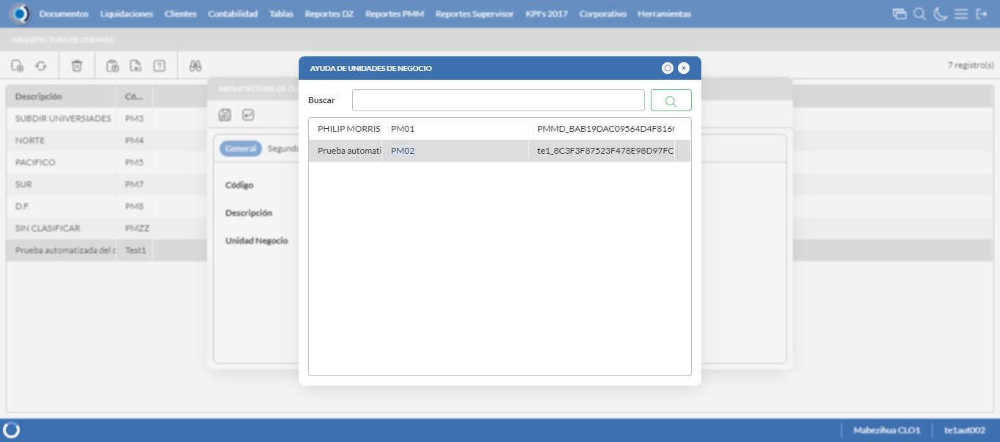

Desarrollado por : Area de Testing PWST
Fecha y hora de inicio : 2023-01-25 12:15:08
Duracion : 0:01:27.629370
Resultado : Total 8，Correctos 7 ，Errores 1 ，Taza de resultado 87.50%
Resumen 87.50% Errores 1 Fallidos 0 Correctos 7 Test realizados 8
| Caso de Prueba | Total | Correctos | Fallido | Error | Detalles | Captura del error |
| ArqCliente.Test: Escenario 1 de Arquitectura Cliente | 8 | 7 | 0 | 1 | Detalles | |
test |
ft1_1: 2023-01-25 12:15:09,825 - root - INFO - Se abre el chrome
2023-01-25 12:15:10,661 - root - INFO - Entra a la URL
2023-01-25 12:15:10,800 - root - INFO - Maximiza la pantalla
Traceback (most recent call last):
File "C:\Users\gerar\AppData\Local\Programs\Python\Python311\Lib\site-packages\selenium\webdriver\remote\switch_to.py", line 88, in frame
frame_reference = self._driver.find_element(By.ID, frame_reference)
^^^^^^^^^^^^^^^^^^^^^^^^^^^^^^^^^^^^^^^^^^^^^^^^^
File "C:\Users\gerar\AppData\Local\Programs\Python\Python311\Lib\site-packages\selenium\webdriver\remote\webdriver.py", line 861, in find_element
return self.execute(Command.FIND_ELEMENT, {"using": by, "value": value})["value"]
^^^^^^^^^^^^^^^^^^^^^^^^^^^^^^^^^^^^^^^^^^^^^^^^^^^^^^^^^^^^^^^^^
File "C:\Users\gerar\AppData\Local\Programs\Python\Python311\Lib\site-packages\selenium\webdriver\remote\webdriver.py", line 444, in execute
self.error_handler.check_response(response)
File "C:\Users\gerar\AppData\Local\Programs\Python\Python311\Lib\site-packages\selenium\webdriver\remote\errorhandler.py", line 249, in check_response
raise exception_class(message, screen, stacktrace)
selenium.common.exceptions.NoSuchElementException: Message: no such element: Unable to locate element: {"method":"css selector","selector":"[id="mainFrame"]"}
(Session info: chrome=109.0.5414.75)
Stacktrace:
Backtrace:
(No symbol) [0x0115F243]
(No symbol) [0x010E7FD1]
(No symbol) [0x00FDD04D]
(No symbol) [0x0100C0B0]
(No symbol) [0x0100C22B]
(No symbol) [0x0103E612]
(No symbol) [0x010285D4]
(No symbol) [0x0103C9EB]
(No symbol) [0x01028386]
(No symbol) [0x0100163C]
(No symbol) [0x0100269D]
GetHandleVerifier [0x013F9A22+2655074]
GetHandleVerifier [0x013ECA24+2601828]
GetHandleVerifier [0x01208C0A+619850]
GetHandleVerifier [0x01207830+614768]
(No symbol) [0x010F05FC]
(No symbol) [0x010F5968]
(No symbol) [0x010F5A55]
(No symbol) [0x0110051B]
BaseThreadInitThunk [0x767C7D69+25]
RtlInitializeExceptionChain [0x7766BB9B+107]
RtlClearBits [0x7766BB1F+191]
During handling of the above exception, another exception occurred:
Traceback (most recent call last):
File "C:\Users\gerar\AppData\Local\Programs\Python\Python311\Lib\site-packages\selenium\webdriver\remote\switch_to.py", line 91, in frame
frame_reference = self._driver.find_element(By.NAME, frame_reference)
^^^^^^^^^^^^^^^^^^^^^^^^^^^^^^^^^^^^^^^^^^^^^^^^^^^
File "C:\Users\gerar\AppData\Local\Programs\Python\Python311\Lib\site-packages\selenium\webdriver\remote\webdriver.py", line 861, in find_element
return self.execute(Command.FIND_ELEMENT, {"using": by, "value": value})["value"]
^^^^^^^^^^^^^^^^^^^^^^^^^^^^^^^^^^^^^^^^^^^^^^^^^^^^^^^^^^^^^^^^^
File "C:\Users\gerar\AppData\Local\Programs\Python\Python311\Lib\site-packages\selenium\webdriver\remote\webdriver.py", line 444, in execute
self.error_handler.check_response(response)
File "C:\Users\gerar\AppData\Local\Programs\Python\Python311\Lib\site-packages\selenium\webdriver\remote\errorhandler.py", line 249, in check_response
raise exception_class(message, screen, stacktrace)
selenium.common.exceptions.NoSuchElementException: Message: no such element: Unable to locate element: {"method":"css selector","selector":"[name="mainFrame"]"}
(Session info: chrome=109.0.5414.75)
Stacktrace:
Backtrace:
(No symbol) [0x0115F243]
(No symbol) [0x010E7FD1]
(No symbol) [0x00FDD04D]
(No symbol) [0x0100C0B0]
(No symbol) [0x0100C22B]
(No symbol) [0x0103E612]
(No symbol) [0x010285D4]
(No symbol) [0x0103C9EB]
(No symbol) [0x01028386]
(No symbol) [0x0100163C]
(No symbol) [0x0100269D]
GetHandleVerifier [0x013F9A22+2655074]
GetHandleVerifier [0x013ECA24+2601828]
GetHandleVerifier [0x01208C0A+619850]
GetHandleVerifier [0x01207830+614768]
(No symbol) [0x010F05FC]
(No symbol) [0x010F5968]
(No symbol) [0x010F5A55]
(No symbol) [0x0110051B]
BaseThreadInitThunk [0x767C7D69+25]
RtlInitializeExceptionChain [0x7766BB9B+107]
RtlClearBits [0x7766BB1F+191]
During handling of the above exception, another exception occurred:
Traceback (most recent call last):
File "C:\xampp\htdocs\versiones\automatizaciones\AutoPWST\01ARC\testCase\ArqCliente.py", line 31, in test
self.driver.switch_to.frame("mainFrame")
File "C:\Users\gerar\AppData\Local\Programs\Python\Python311\Lib\site-packages\selenium\webdriver\remote\switch_to.py", line 93, in frame
raise NoSuchFrameException(frame_reference)
selenium.common.exceptions.NoSuchFrameException: Message: mainFrame
|
|
||||
test_000: Ingresa a la base de datos |
pt1_2: 2023-01-25 12:15:13,957 - root - INFO - Escribe el usuario
2023-01-25 12:15:14,043 - root - INFO - Escribe la contraseña
2023-01-25 12:15:14,111 - root - INFO - Se dio clic en el boton ingresar
2023-01-25 12:15:14,797 - root - INFO - Ejecutar Enterprise
2023-01-25 12:15:18,836 - root - INFO - Cambia entre pestañas
|
|
||||
test_001: Abre menu y ejecuta pantalla |
pt1_3: 2023-01-25 12:15:29,411 - root - INFO - Abre la pantalla de Arquitectura de CLiente
2023-01-25 12:15:29,421 - root - INFO - Captura: C:\xampp\htdocs\versiones\automatizaciones\AutoPWST\01ARC\report\img screen：20230125_12_15_29.png
2023-01-25 12:15:30,104 - root - INFO - La pantalla ejecutada es Tipos de Cliente
2023-01-25 12:15:30,675 - root - INFO - Se da clic en el registro creado, para proceder a modificarlo.
2023-01-25 12:15:31,244 - root - INFO - Se hace el cambio de pestaña para continuar con el registro nuevo
2023-01-25 12:15:32,338 - root - INFO - Se da clic en el registro de segundo nivel creado, para proceder a eliminarlo.
2023-01-25 12:15:32,909 - root - INFO - Se hace el cambio de pestaña para continuar con el registro nuevo
2023-01-25 12:15:34,017 - root - INFO - Se da clic en el registro de tercer nivel creado, para proceder a eliminarlo.
2023-01-25 12:15:34,593 - root - INFO - Se hace el cambio de pestaña para continuar con el registro nuevo
2023-01-25 12:15:35,681 - root - INFO - Se da clic en el registro de cuarto nivel creado, para proceder a eliminarlo.
2023-01-25 12:15:35,744 - root - INFO - Se presiona el boton 'Eliminar' de cuarto nivel, para eliminar el registro.
2023-01-25 12:15:35,898 - root - INFO - Se da clic en el boton Guardar de tercer nivel; se debe crear un nuevo registro.
2023-01-25 12:15:36,099 - root - INFO - Se da clic en el boton Guardar de segundo nivel; se debe crear un nuevo registro.
2023-01-25 12:15:36,339 - root - INFO - Se da clic en el boton Guardar; se debe crear un nuevo registro.
2023-01-25 12:15:36,925 - root - INFO - Se da clic en el registro creado, para proceder a eliminarlo.
2023-01-25 12:15:37,489 - root - INFO - Se hace el cambio de pestaña para continuar con el registro nuevo
2023-01-25 12:15:38,579 - root - INFO - Se da clic en el registro de segundo nivel creado, para proceder a eliminarlo.
2023-01-25 12:15:39,156 - root - INFO - Se hace el cambio de pestaña para continuar con el registro nuevo
2023-01-25 12:15:40,234 - root - INFO - Se da clic en el registro de tercer nivel creado, para proceder a eliminarlo.
2023-01-25 12:15:40,286 - root - INFO - Se presiona el boton 'Eliminar' de tercer nivel, para eliminar el registro.
2023-01-25 12:15:40,422 - root - INFO - Se da clic en el boton Guardar de segundo nivel; se debe crear un nuevo registro.
2023-01-25 12:15:40,655 - root - INFO - Se da clic en el boton Guardar; se debe crear un nuevo registro.
2023-01-25 12:15:41,238 - root - INFO - Se da clic en el registro creado, para proceder a eliminarlo.
2023-01-25 12:15:41,804 - root - INFO - Se hace el cambio de pestaña para continuar con el registro nuevo
2023-01-25 12:15:42,879 - root - INFO - Se da clic en el registro de segundo nivel creado, para proceder a eliminarlo.
2023-01-25 12:15:42,928 - root - INFO - Se presiona el boton 'Eliminar' de segundo nivel, para eliminar el registro.
2023-01-25 12:15:43,047 - root - INFO - Se da clic en el boton Guardar; se debe crear un nuevo registro.
2023-01-25 12:15:43,638 - root - INFO - Se da clic en el registro creado, para proceder a eliminarlo.
2023-01-25 12:15:43,693 - root - INFO - Se presiona el boton 'Eliminar', para eliminar el registro.
2023-01-25 12:15:44,259 - root - INFO - Se confirma el eliminado del registro
2023-01-25 12:15:44,431 - root - INFO - Se presiona el boton 'Refrescar', para crear un nuevo registro igual al anterior.
2023-01-25 12:15:46,494 - root - INFO - Se presiona el boton 'Nuevo', para crear un nuevo registro.
|
 | ||||
test_002: Abre la ventana de nuevo y crear un registro |
pt1_4: 2023-01-25 12:15:47,039 - root - INFO - Se abrio la pantalla para el ingreso de un registro nuevo.
2023-01-25 12:15:47,087 - root - INFO - Ingresa el codigo del nuevo registro
2023-01-25 12:15:47,160 - root - INFO - Ingresa el codigo alternativo del nuevo registro
2023-01-25 12:15:47,298 - root - INFO - Ingresa la descripción del nuevo registro
2023-01-25 12:15:48,175 - root - INFO - Captura: C:\xampp\htdocs\versiones\automatizaciones\AutoPWST\01ARC\report\img screen：20230125_12_15_48.png
2023-01-25 12:15:48,366 - root - INFO - Se hace el cambio de pestaña para continuar con el registro nuevo
2023-01-25 12:15:48,937 - root - INFO - Se presiona el boton de segundo nivel 'Nuevo', para crear un nuevo registro.
2023-01-25 12:15:49,510 - root - INFO - Ingresa el codigo del nuevo registro en segundo nivel
2023-01-25 12:15:49,593 - root - INFO - Ingresa el codigo alternativo del nuevo registro en segundo nivel
2023-01-25 12:15:49,721 - root - INFO - Ingresa la descripción del nuevo registro del segundo nivel
2023-01-25 12:15:49,764 - root - INFO - Se hace el cambio de pestaña para continuar con el registro nuevo
2023-01-25 12:15:50,345 - root - INFO - Se presiona el boton 'Nuevo' de tercer nivel, para crear un nuevo registro.
2023-01-25 12:15:50,919 - root - INFO - Ingresa el codigo del nuevo registro en tercer nivel
2023-01-25 12:15:51,012 - root - INFO - Ingresa el codigo alternativo del nuevo registro en tercer nivel
2023-01-25 12:15:51,157 - root - INFO - Ingresa la descripción del nuevo registro del tercer nivel
2023-01-25 12:15:51,206 - root - INFO - Se hace el cambio de pestaña para continuar con el registro nuevo
2023-01-25 12:15:51,789 - root - INFO - Se presiona el boton 'Nuevo' de cuarto nivel, para crear un nuevo registro.
2023-01-25 12:15:52,366 - root - INFO - Ingresa el codigo del nuevo registro en cuarto nivel
2023-01-25 12:15:52,470 - root - INFO - Ingresa el codigo alternativo del nuevo registro en cuarto nivel
2023-01-25 12:15:52,647 - root - INFO - Ingresa la descripción del nuevo registro del cuarto nivel
2023-01-25 12:15:52,703 - root - INFO - Se da clic en el boton Guardar de cuarto nivel; se debe crear un nuevo registro.
2023-01-25 12:15:52,957 - root - INFO - Se da clic en el boton Guardar de tercer nivel; se debe crear un nuevo registro.
2023-01-25 12:15:53,141 - root - INFO - Se da clic en el boton Guardar de segundo nivel; se debe crear un nuevo registro.
2023-01-25 12:15:53,359 - root - INFO - Se da clic en el boton Guardar; se debe crear un nuevo registro.
|
 | ||||
test_003: Repetir el registro creado anteriormente |
pt1_5: 2023-01-25 12:15:53,604 - root - INFO - Se presiona el boton 'Refrescar', para crear un nuevo registro igual al anterior.
2023-01-25 12:15:55,649 - root - INFO - Se presiona el boton 'Nuevo', para crear un nuevo registro igual al anterior.
2023-01-25 12:15:56,196 - root - INFO - Se abrio la pantalla para el ingreso de un registro nuevo.
2023-01-25 12:15:56,244 - root - INFO - Ingresa el codigo del nuevo registro
2023-01-25 12:15:56,317 - root - INFO - Ingresa el codigo alternativo del nuevo registro
2023-01-25 12:15:56,448 - root - INFO - Ingresa la descripción del nuevo registro
2023-01-25 12:15:57,531 - root - INFO - Se da clic en el boton Guardar; se debe crear un nuevo registro.
2023-01-25 12:15:58,134 - root - INFO - Se da clic en el boton del mensaje de registro duplicado
2023-01-25 12:16:00,135 - root - INFO - Captura: C:\xampp\htdocs\versiones\automatizaciones\AutoPWST\01ARC\report\img screen：20230125_12_16_00.png
2023-01-25 12:16:00,306 - root - INFO - Se presiona el boton 'Cerrar', para cerrar el mensaje de duplicidad de llave primaria
2023-01-25 12:16:00,416 - root - INFO - Se presiona el boton 'Cerrar', para cerrar la ventana
|
 | ||||
test_004: Modificar el registro |
pt1_6: 2023-01-25 12:16:00,527 - root - INFO - Se presiona el boton 'Refrescar', para crear un nuevo registro igual al anterior.
2023-01-25 12:16:03,099 - root - INFO - Se da clic en el registro creado, para proceder a modificarlo.
2023-01-25 12:16:03,714 - root - INFO - Ingresa el codigo alternativo del nuevo registro
2023-01-25 12:16:03,879 - root - INFO - Ingresa la descripción del nuevo registro
2023-01-25 12:16:04,745 - root - INFO - Se da doble click en el registro de Unidad Negocio.
2023-01-25 12:16:04,745 - root - INFO - Captura: C:\xampp\htdocs\versiones\automatizaciones\AutoPWST\01ARC\report\img screen：20230125_12_16_04.png
2023-01-25 12:16:05,144 - root - INFO - Se hace el cambio de pestaña para continuar con el registro nuevo
2023-01-25 12:16:06,252 - root - INFO - Se da clic en el registro de segundo nivel creado, para proceder a modificarlo.
2023-01-25 12:16:06,864 - root - INFO - Ingresa el codigo alternativo del registro modificado en segundo nivel
2023-01-25 12:16:07,036 - root - INFO - Ingresa la descripción del registro modificado del segundo nivel
2023-01-25 12:16:07,079 - root - INFO - Se hace el cambio de pestaña para continuar con el registro nuevo
2023-01-25 12:16:08,217 - root - INFO - Se da clic en el registro de tercer nivel creado, para proceder a modificarlo.
2023-01-25 12:16:08,844 - root - INFO - Ingresa el codigo alternativo del registro modificado en tercer nivel
2023-01-25 12:16:09,036 - root - INFO - Ingresa la descripción del registro modificado del tercer nivel
2023-01-25 12:16:09,078 - root - INFO - Se hace el cambio de pestaña para continuar con el registro nuevo
2023-01-25 12:16:10,184 - root - INFO - Se da clic en el registro de cuarto nivel creado, para proceder a modificarlo.
2023-01-25 12:16:10,831 - root - INFO - Ingresa el codigo alternativo del nuevo registro en cuarto nivel
2023-01-25 12:16:11,007 - root - INFO - Ingresa la descripción del nuevo registro del cuarto nivel
2023-01-25 12:16:11,061 - root - INFO - Se da clic en el boton Guardar de cuarto nivel; se debe crear un nuevo registro.
2023-01-25 12:16:11,308 - root - INFO - Se da clic en el boton Guardar de tercer nivel; se debe crear un nuevo registro.
2023-01-25 12:16:11,577 - root - INFO - Se da clic en el boton Guardar de segundo nivel; se debe crear un nuevo registro.
2023-01-25 12:16:11,792 - root - INFO - Se da clic en el boton Guardar; se debe crear un nuevo registro.
|
 | ||||
test_005: Eliminar el registro creado |
pt1_7: 2023-01-25 12:16:12,051 - root - INFO - Se presiona el boton 'Refrescar', para proceder a eliminar el registro.
2023-01-25 12:16:14,642 - root - INFO - Se da clic en el registro creado, para proceder a eliminarlo.
2023-01-25 12:16:15,212 - root - INFO - Se hace el cambio de pestaña para continuar con el registro nuevo
2023-01-25 12:16:16,287 - root - INFO - Se da clic en el registro de segundo nivel creado, para proceder a eliminarlo.
2023-01-25 12:16:16,858 - root - INFO - Se hace el cambio de pestaña para continuar con el registro nuevo
2023-01-25 12:16:17,946 - root - INFO - Se da clic en el registro de tercer nivel creado, para proceder a eliminarlo.
2023-01-25 12:16:18,513 - root - INFO - Se hace el cambio de pestaña para continuar con el registro nuevo
2023-01-25 12:16:19,578 - root - INFO - Se da clic en el registro de cuarto nivel creado, para proceder a eliminarlo.
2023-01-25 12:16:19,633 - root - INFO - Se presiona el boton 'Eliminar' de cuarto nivel, para eliminar el registro.
2023-01-25 12:16:19,769 - root - INFO - Se da clic en el boton Guardar de tercer nivel; se debe crear un nuevo registro.
2023-01-25 12:16:19,965 - root - INFO - Se da clic en el boton Guardar de segundo nivel; se debe crear un nuevo registro.
2023-01-25 12:16:20,176 - root - INFO - Se da clic en el boton Guardar; se debe crear un nuevo registro.
2023-01-25 12:16:20,737 - root - INFO - Se da clic en el registro creado, para proceder a eliminarlo.
2023-01-25 12:16:21,299 - root - INFO - Se hace el cambio de pestaña para continuar con el registro nuevo
2023-01-25 12:16:22,396 - root - INFO - Se da clic en el registro de segundo nivel creado, para proceder a eliminarlo.
2023-01-25 12:16:22,977 - root - INFO - Se hace el cambio de pestaña para continuar con el registro nuevo
2023-01-25 12:16:24,059 - root - INFO - Se da clic en el registro de tercer nivel creado, para proceder a eliminarlo.
2023-01-25 12:16:24,114 - root - INFO - Se presiona el boton 'Eliminar' de tercer nivel, para eliminar el registro.
2023-01-25 12:16:24,242 - root - INFO - Se da clic en el boton Guardar de segundo nivel; se debe crear un nuevo registro.
2023-01-25 12:16:24,444 - root - INFO - Se da clic en el boton Guardar; se debe crear un nuevo registro.
2023-01-25 12:16:25,023 - root - INFO - Se da clic en el registro creado, para proceder a eliminarlo.
2023-01-25 12:16:25,585 - root - INFO - Se hace el cambio de pestaña para continuar con el registro nuevo
2023-01-25 12:16:26,667 - root - INFO - Se da clic en el registro de segundo nivel creado, para proceder a eliminarlo.
2023-01-25 12:16:26,720 - root - INFO - Se presiona el boton 'Eliminar' de segundo nivel, para eliminar el registro.
2023-01-25 12:16:26,836 - root - INFO - Se da clic en el boton Guardar; se debe crear un nuevo registro.
2023-01-25 12:16:27,411 - root - INFO - Se da clic en el registro creado, para proceder a eliminarlo.
2023-01-25 12:16:27,481 - root - INFO - Se presiona el boton 'Eliminar', para eliminar el registro.
2023-01-25 12:16:29,481 - root - INFO - Captura: C:\xampp\htdocs\versiones\automatizaciones\AutoPWST\01ARC\report\img screen：20230125_12_16_29.png
2023-01-25 12:16:29,620 - root - INFO - Se confirma el eliminado del registro
2023-01-25 12:16:29,794 - root - INFO - Se presiona el boton 'Refrescar', para crear un nuevo registro igual al anterior.
2023-01-25 12:16:31,855 - root - INFO - Se presiona el boton 'Cerrar', para cerrar la pantalla de Categorias Fiscales.
|

|
||||
test_006: Cerrar_Navegador |
pt1_8: 2023-01-25 12:16:36,238 - root - INFO - Se cierra chrome
|
|
||||
| Caso de prueba | 8 | 7 | 0 | 1 | Taza de resultado：87.50% | |